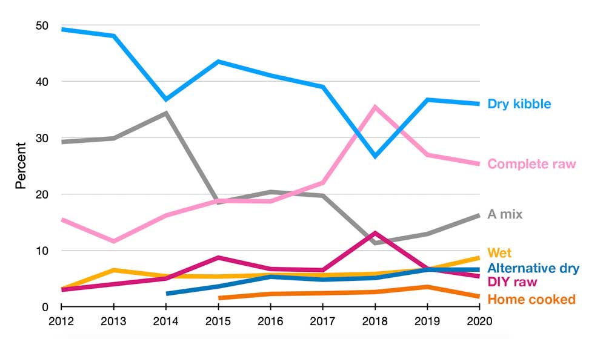

Each spring we run the same poll on our homepage entitled 'The big question: what do you mostly feed your dog?'. Visitors are able to choose between all of the various types of foods available from dry kibble to raw, from wet to home cooked. Most years we get more than 1000 votes and some pretty interesting trends are starting to emerge - trends that could mean some big changes for the pet food industry in the not so distant future.

Is the poll representative of the population as a whole?
No, it isn't. It is, however, representative of the kind of people that visit AllAboutDogFood.co.uk - dog owners and pet care professionals that are generally a bit more educated in and engaged with their pet's food than the majority. These are the early adopters and the influencers of the pet community and we've found they provide a pretty good indication for the likely direction of travel of the wider community in the years to come.
The problem with 2018
In 2018 our poll gained a lot of coverage amongst raw feeding groups and as a result a disproportionate amount of votes were cast for raw diets. For this reason we're going to omit that year from our analysis.
Top trends
1. The decline of kibble
Conventional dry kibbles (primarily extruded) have long dominated the global pet food market but it's clear to see that their popularity amongst our visitors is falling fast. Over the last 9 years their share of votes has dropped consistently from around 50% in 2012 all the way down to 36% in 2020. Of course, this is still enough to secure the top spot but it is remarkable how fast their lead is shrinking.
2. The rise of raw
Raw foods and especially store-bought raw completes have always been popular with our visitors so we weren't surprised to see roughly one fifth of the votes go to them in 2012. What has surprised us, however, is how their popularity has continued to rise over the years. Now, just 9 years on, almost one third of our visitors feed their dogs on raw diets of one form or another.
3. Alternatives surging
But raw isn't the only food category to benefit from the decline of conventional dry foods. In fact, in terms of percentage growth, wet, home cooked and alternative dry foods (cold pressed, air-dried, freeze-dried) have all done way better than even raw, each clocking up an enormous THREE FOLD increase in popularity since 2012!
4. Mixing going out of fashion?
Interestingly, the proportion of people who describe their dogs' diets as "a mix" rather than any particular category of food has collapsed from roughly 30% in 2012 to just 16% this year. While it's impossible to pinpoint exactly what this means since 'a mix' is far too broad for any meaningful analysis, it is interesting that so many fewer people are apparently mixing different categories of foods than just a few years ago. If you were a mixer but aren't any more, many be you could let us know why in the comments section.
The overall trend
So what we have is a substancial amount of dog owners moving from conventional kibble on to every other type of pet food.
If this trend was to continue into the wider community, it would mark the biggest market shift since complete foods were introduced in the 1960's. Dry kibbles have absolutely dominated the global pet food market ever since there has been a market but only recently have significant numbers of people been considering whether they are, in fact, the best thing for their pets.
Of course, not all conventionally produced kibbles are bad - some are actually excellent, but the majority of foods in the category are both lower garde and more processed than foods from the alternative categories. So what we're really seeing is a move towards less processing and higher quality diets and that can only be great news!
The future is here
Of course, it's possible these trends won't cross over to the wider market but if you know what to look for, there are actually a lot of signs that they already are:
The raw revolution is already a global phenomenon and the speed of its emergence really highlights just how much of an appetite there is for alternatives to conventional pet foods. The enormous backlash we've seen from the pet food establishment also speaks volumes of their panic at the emerging direction of travel.
Buy-outs galore! The Big Three pet food multinationals are attempting to buy up high-end independant brands left, right and center. This is because it's much easier for them to simply buy a slice of the high-quality pet food market rather than improving their own products and reputation. While these buy-outs are often hard to stomach, they are a sure sign that the market is moving and the established industry is scrambling to keep up.
A golden age of pet food innovation. Recent years have seen more and more processing methods and ingredient options coming to market as manufacturers compete to secure their portion of the growing alternative food market.
Much like an ocean liner, changing the course of the pet food industry is not an easy task - it takes time and perseverance. But now that the wheel is finally slipping out of the hands of the pet food multinationals, our destination is looking better than ever!
Have you recently changed the type of food you feed? Please let us know in the comments section why you made the change and how it has affected your dog?